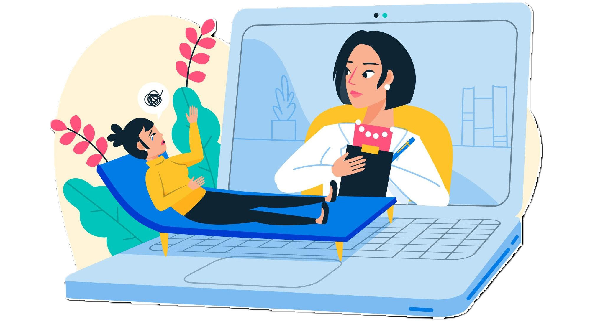

Simti Epuizare și Anxietate? Cum să gestionezi stresul profesional în Sibiu (Soluții Online Flexibile)
Introducere: Presiunea vieții profesionale moderne
Ești un profesionist activ în Sibiu, dedicat carierei tale, dar simți cum presiunea constantă, termenele limită și volumul mare de muncă încep să te copleșească? Nu ești singurul/singura. Mulți tineri profesioniști se confruntă cu un nivel ridicat de stres care, netratat, poate duce la epuizare (burnout), anxietate și chiar simptome depresive, afectând nu doar performanța la locul de muncă, ci și calitatea vieții personale.
Semne și simptome comune ale stresului profesional Cronic
Este important să recunoaștem semnele timpurii ale stresului cronic pentru a putea interveni. Acestea pot include:
- Oboseală persistentă, lipsă de energie
- Dificultăți de concentrare și probleme de memorie
- Iritabilitate crescută, toleranță scăzută la frustrare
- Sentiment de copleșire, lipsă de control
- Probleme cu somnul (insomnie sau somn agitat)
- Modificări ale apetitului
- Retragere socială, pierderea interesului pentru activități plăcute
- Simptome fizice: dureri de cap, tensiune musculară, probleme digestive
- Anxietate, îngrijorări excesive legate de muncă
Strategii generale de management al stresului (puncte de pornire)
Există câteva strategii pe care le poți implementa pentru a reduce nivelul de stres zilnic. Acestea sunt sfaturi generale și nu înlocuiesc ajutorul specializat:
- **Stabilește limite clare:** Încearcă să delimitezi timpul de lucru de cel personal. Deconectează-te (pe cât posibil) de la emailuri și notificări în afara programului.
- **Ia pauze regulate:** Chiar și pauzele scurte de 5-10 minute la fiecare oră pot ajuta la reîncărcarea bateriilor și la menținerea concentrării.
- **Prioritizează sarcinile:** Folosește tehnici de management al timpului (ex. matricea Eisenhower, liste to-do) pentru a te concentra pe ce este cu adevărat important și urgent.
- **Mișcare fizică:** Activitatea fizică regulată este un excelent eliberator de stres. Include în rutina ta plimbări, alergat, yoga sau orice altă formă de mișcare preferi.
- **Tehnici de relaxare:** Exercițiile de respirație profundă sau meditația mindfulness (chiar și 5 minute pe zi) pot reduce semnificativ nivelul de stres perceput.
Când ai nevoie de ajutor specializat?
Dacă strategiile generale nu par să fie suficiente, dacă simptomele persistă sau se agravează, dacă stresul îți afectează semnificativ funcționarea zilnică (la muncă, acasă, în relații), este momentul să iei în considerare ajutorul unui profesionist. Un psihoterapeut te poate ajuta să înțelegi rădăcinile stresului și anxietății tale și să dezvolți mecanisme de coping personalizate și eficiente.
Soluția Bloom Therapy: Terapie Online Flexibilă și Specializată
La Bloom Therapy, înțelegem provocările unice ale profesioniștilor ocupați din Sibiu. De aceea, oferim **consiliere psihologică exclusiv online**, specializată în gestionarea **stresului, anxietății și depresiei**. Avantajele abordării noastre sunt:
- **Flexibilitate maximă:** Programează ședințe în funcție de programul tău, inclusiv seara sau în weekend, fără a pierde timp pe drumuri.
- **Accesibilitate:** Participă la terapie din confortul și confidențialitatea propriei case sau din orice loc cu o conexiune bună la internet.
- **Expertiză:** Lucrezi cu terapeuți acreditați, specializați în abordări validate (precum CBT) pentru problemele cu care te confrunți.
- **Confidențialitate și Siguranță:** Folosim o platformă online securizată pentru a proteja datele și discuțiile tale.
Concluzie și Pasul Următor
Stresul profesional nu trebuie să devină o normalitate copleșitoare. Există soluții eficiente și adaptate stilului tău de viață alert. Bloom Therapy îți oferă expertiza și flexibilitatea de care ai nevoie pentru a-ți recăpăta echilibrul și starea de bine.
Fă primul pas acum! Beneficiază de o **consultație inițială online, gratuită și confidențialială**, pentru a discuta despre nevoile tale și a descoperi cum te putem ajuta.
Programează Consultația Gratuită« Înapoi la Blog